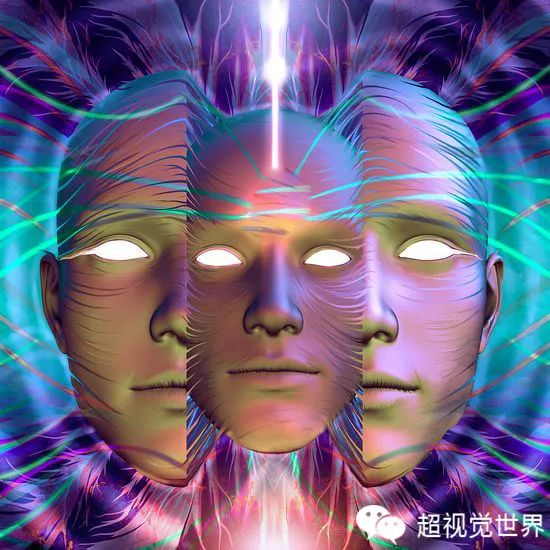
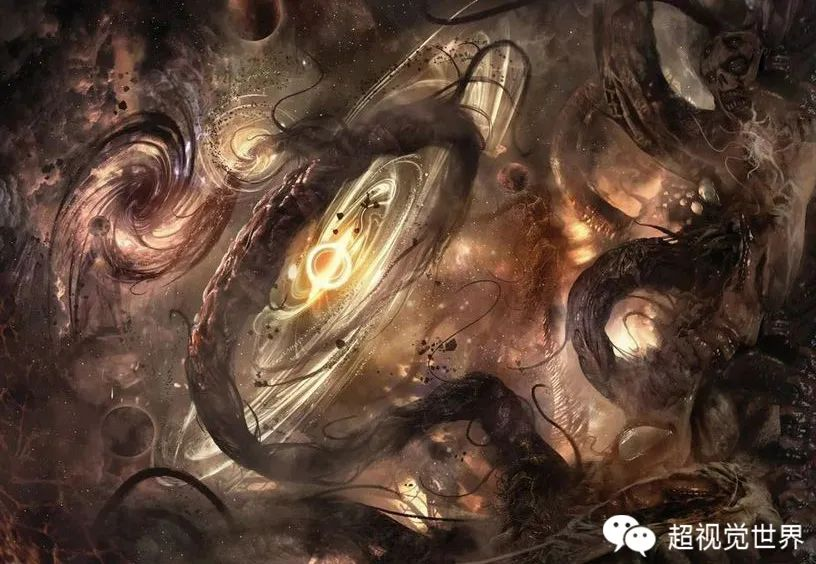
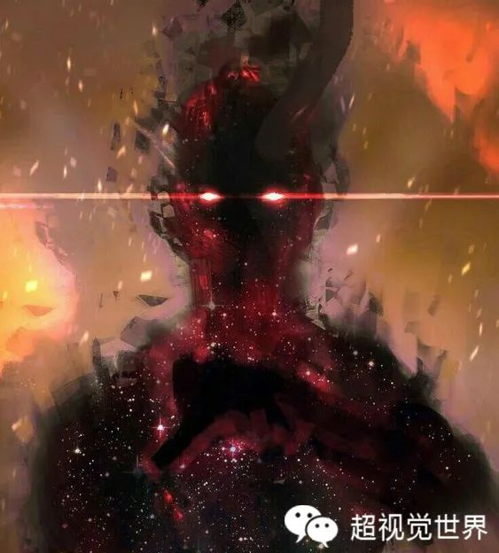
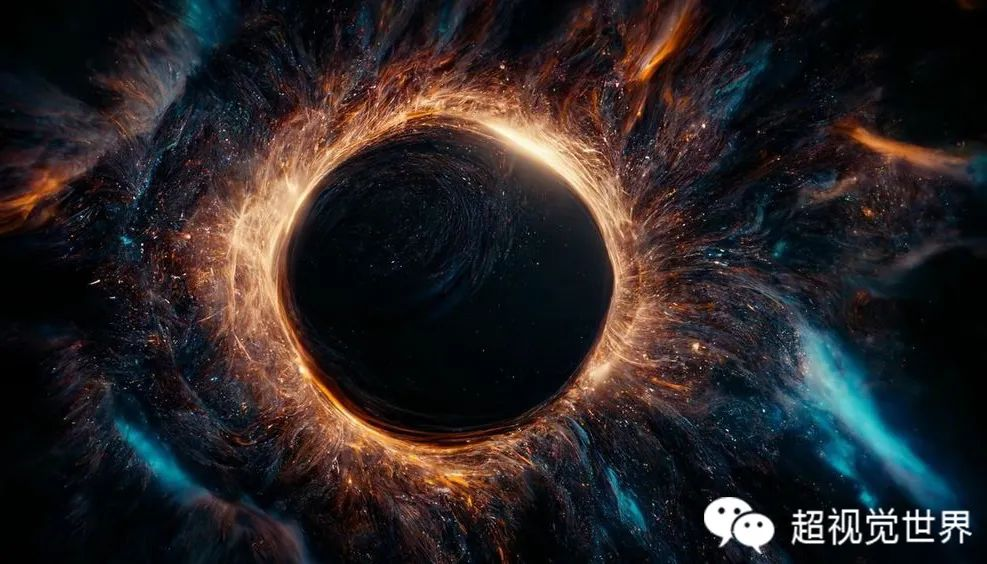
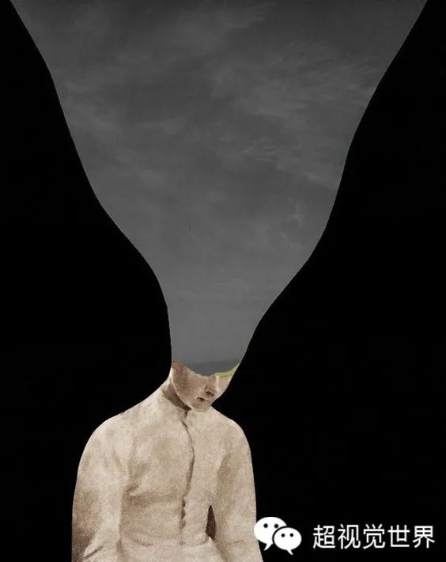
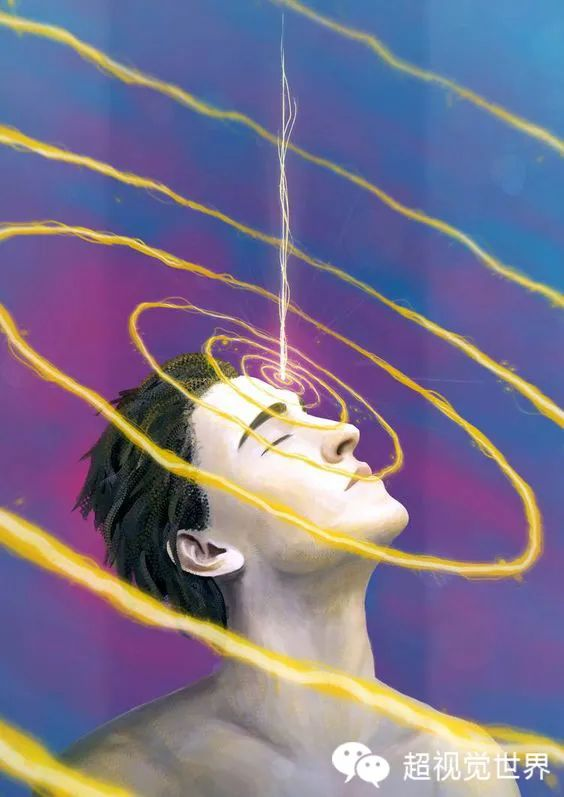

你的头上被插了管子吗？
原创 超视觉世界 Bobo 超视觉世界 2022-12-09 19:46 发表于辽宁 原文链接(长) 原文链接(短)生活中，我们经常发现，有时候突然会产生一些负面情绪，甚至突然产生一些不好的念头。回过神来觉得很恐怖，刚才怎么会有这种想法？还有的人需要很长时间才能走出阴影。你知道吗？ **这种情况可能是你的头上被插了管子。**

这个管子是哪里来的呢？又是怎么插进头部的呢？当我们的能量场产生漏洞和破损时， **负面次元的能量管道就会伸进我们的能量场里，** 把源源不断的负能量传递给大脑，对我们的情绪和行为产生干扰，这和苍蝇不叮无缝的蛋是一个道理。那么负面能量场又是什么样的呢？通过超视觉观察，是昏暗的、混沌的，到处是尘埃，无边界。它以声音、画面、意识流的形式通过管道传递给人类。当负面能量进入管道时，人的精神和意志往往会失去控制。通常会产生抱怨、愤怒、悲伤、暴躁、嫉妒、颓废等思想情绪，出现伤害自己和他人的行为，变得非常不理智。

有一次在机场候机，我发现很多人的头上都插进了管子。这时听到广播通知，由于航班延误，起飞时间待定。当有不可预料的事情发生时， **负面信息就会通过管子更快速的流进大脑。** 有的人变得坐立不安，有的人打电话抱怨、咆哮，有的人嘴里开始说脏话……我看到他们的能量场逐渐变成了深红色、深绿色，甚至棕色。这样很容易引起身体和心理疾病。如果这个结果不会因为我们做任何负能量的事情而改变，那还不如安心等待，安排好后续行程，祈福飞机能早一点起飞，祝福我们能有好运气。

曾经帮助一位女性朋友调整感情问题。我发现她的感情能量场是完整的，没有问题。但是实际感情生活中，她却很木讷，甚至有人向她表白了她也不知道如何是好。更不懂得如何于人相处，经常看到的都是不好的一面，她自己的评价就是情商很低。在调整中我发现，她的头上插了根管子，很多负面想法和对感情的恐惧、担忧影响了她的感情发展，也影响到了人际关系相处。其实，并不是她喜欢孤独、傲慢，有时候也想敞开心扉，迎接爱情，好好与人相处。每当这时候，就像晴天霹雳， **一个个不好的念头马上就产生了，让她停止正向的想法。** 人不能一直活在恐惧和阴影里，断开与负面能量场磁场的连接，修复好能量场才是关键。
有一次去看朋友的母亲。她见到我就开始讲述年轻时候的事情，谁对她不好了，欺负她了，以前过得多苦多难……朋友也很无奈，每天听妈妈唠叨过去的事，翻来覆去没说过什么好事，又不能阻止她，一说她就会翻脸，真是没办法，怎么样才能把她拉出来呢？我看到负能量的管子插进了老人大脑的海马体，源源不断的负能量涌入，会让她沉浸于不好的记忆里无法自拔。这些看不见摸不到的能量干扰，一直在影响着老人。 **能量的主导先于现实的发生，无论是情绪、行为还是疾病。** 人生有精彩也有不顺意的时候，如果只记住那些不好的经历，会拉低我们的能量，让我们走向下坡路。但是大多数时候，我们是无法察觉控制自己的。需要拔出低频的能量管子，阻断它对我们的干扰。

有一天去朋友家拜访，朋友说他的孩子总是溜号、走神，经常爱发脾气。请我帮孩子看看能量状态怎么样。我发现孩子的右脑能量堵塞严重，右脑位置还有一条管道与负面能量场连接的非常紧密。会造成理解能力比较弱，不容易控制情绪，思想不太成熟等情况。我告诉她孩子的情况，朋友说是啊，平时看着听课挺认真，但是不知道脑袋里在想什么。这么大了还经常发脾气，有时候歇斯底里，控制不住自己。这些情况其实都是负面能量管道对他产生的影响。 **孩子的能量场本来就是开放的，如果没有很好的防护，容易受到负能量侵袭。** 小孩子们经常不懂事、吵闹，一是因为心智能量还不健全，更重要的一点是，很多孩子的头部都插了管子，使负能量不断进入大脑。很多家长不了解真实情况，从忍耐到教育到爆发，这样更容易影响孩子心智成长和情绪管理。

我发现，这几年头上插管子的人明显多了，这是什么原因呢？带着好奇，顺着管子仔细观察，这些负能量管道的另一端源自哪里？它又是如何产生的呢？当我们有意识的寻找原因看向本质的时候，就离真相更加接近了。我们生活的三维世界里，除了看得见摸得到的现实维度，还有许多看不见摸不着能量维度，负能量管道的另一端就延伸至精神维度。在这里，存在着各种正向能量，喜悦、幸福、勇气、希望等，也有很多的负面能量，愤怒、恐惧、担忧、嫉妒、颓废等。这些能量是哪里来的呢？ **其实这一切都是源自于人类的集体意识所创造。** 现在的精神领域能量场，负能量越来越多，越来越强，在不断填充扩张，污染着我们的精神意志，当它们扩张膨胀到一定程度时，会将触手像管道一样伸向现实世界，对人类产生干扰。

我在不断探索发现能量世界，希望帮助大家活的更加清楚、明白、透彻。想要改变现状，需要我们共同努力，有意识的改变思想，让更多正向能量代替负能量，让光明代替昏暗。这样 **人类才不会被我们自己创造的精神垃圾所污染。** 希望有一天，大家都能拔掉负能量的管子，蓬勃向上的创造未来，好好体验属于你的人生。